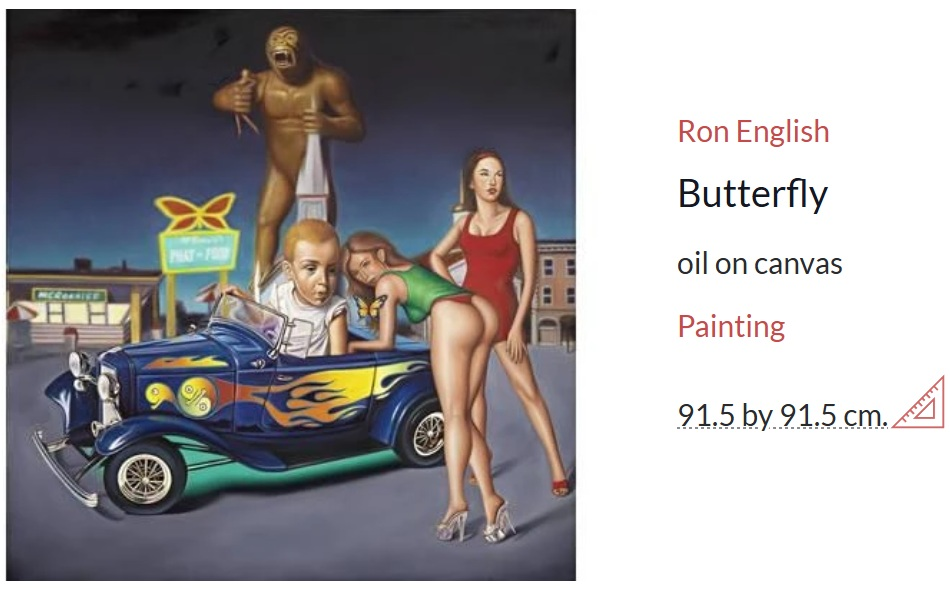
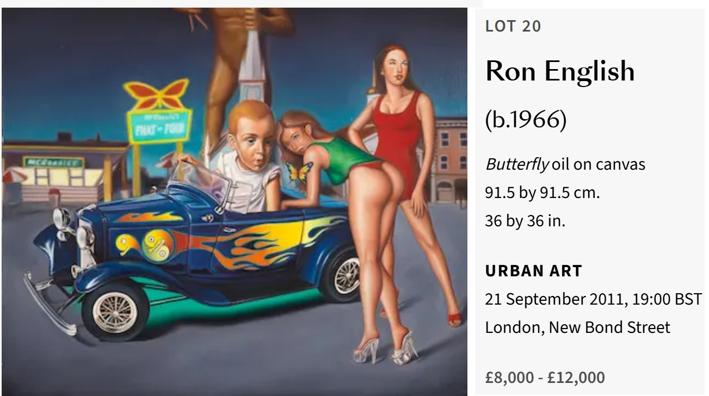

Literature
“Ron English: A One-Man POPaganda Machine”.. Juxtapoz Magazine, November-December 2002.

Notes
This work appears on MutualArt’s artwork page and Bonhams’ lot page for the Urban Art sale held on September 21, 2011.
Ancillary Documentation

